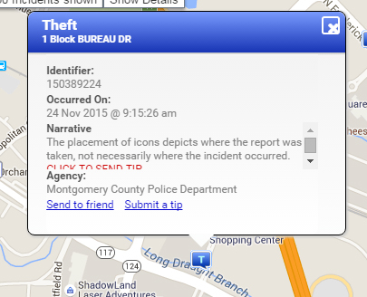

Map of Gaithersburg

Theft
Registered Sex Offenders
Crime Tip
This website interested me because it tells you were crimes has taken place in any loction in the United States and Canada on a map. Some of the crimes that they tell you about are theft, assault, theft from vehicle, and robbery; plus they tell you address in which the crime took place. Another reason is that they tell you were all of the registered sex offenders live. You are also able to give a tip of a crime.